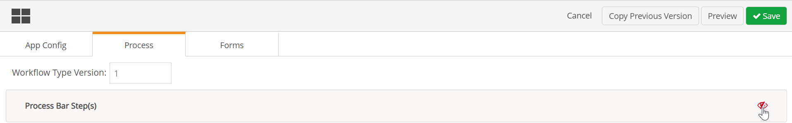
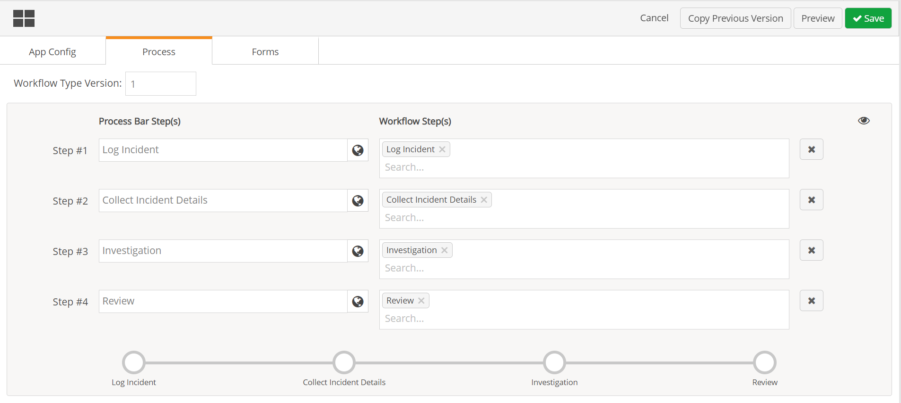

The Process Bar can be enabled for any Advanced Workflows (WAB) solution in order to give users a quick visual view of the overall workflow progress. When enabled, the Process Bar is displayed at the top of the page for the for the primary workflow in the app.
You can hide or show the Process Bar by clicking the display button to the right of the menu buttons.
The Process Bar can be enabled and configured in Form Designer. It is available only for the primary workflow type. The primary workflow type for the IncidentApp is EII-Incident. For the Management Of Change App, it is EMC-ChangeRequest.
To enable the Process Bar:
Select Designer from the main menu button to open Forms Designer.
Select the Process Bar at the top left.
If the Process Bar is not enabled, there will be a slashed, red eyeball icon.
Click the eyeball icon to enable the Process Bar.

All steps in the workflow are shown in the order they occur. You can now configure the Process Bar for display as you want.
Edit the step name: The default name of the step is the same as the workflow step name as defined in the workflow type. For display purposes you may want to shorten some step names. For instance "Collect Incident Details" may be "Collect Details" in the Process Bar.
Combine steps: A single step in the Process Bar may represent more than one workflow step. For example, if step 1 and step 2 are normally performed at the same time by the same person, they can be represented as one step in the process bar (see below). You will first need to delete a workflow step from the Process Bar step where it is currently assigned, then add it to another Process Bar step. All workflow steps must be assigned to a Process Bar step.
